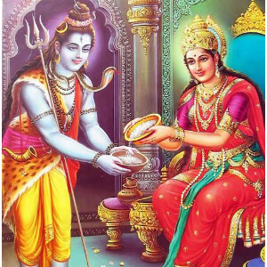
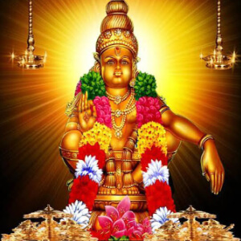
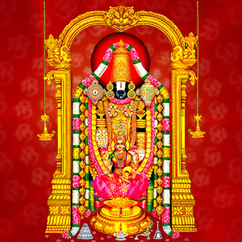
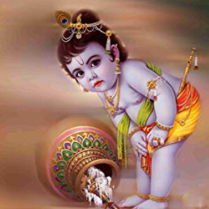
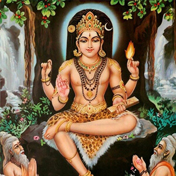
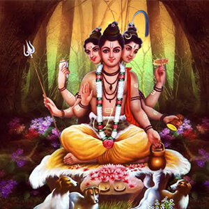
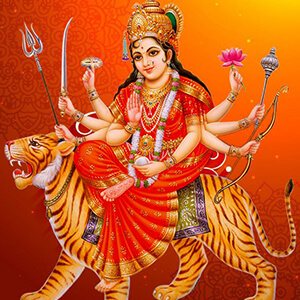
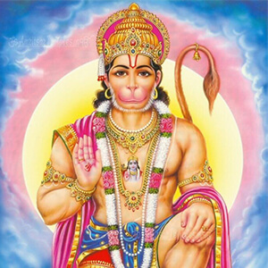
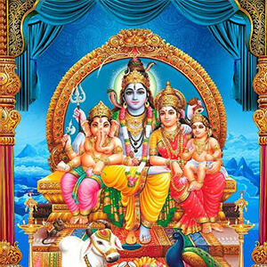

<!-- ======= Features Section ======= -->
<section id="features" class="features section-bg">
  <div class="container" data-aos="fade-up">

    <div class="section-header">
      <h2>About Us</h2>
      <p>Consequatur libero assumenda est voluptatem est quidem illum et officia imilique qui vel architecto accusamus fugit aut qui distinctio</p>
    </div>

    <ul class="nav nav-tabs d-flex justify-content-center align-items-center gap-3 flex-wrap" role="tablist">
      <li class="nav-item" role="presentation">
        <a class="nav-link active" data-bs-toggle="tab" href="#tab-1" role="tab" aria-selected="true" tabindex="0">
          <h4 class="mb-0">Deities</h4>
        </a>
      </li>
      <li class="nav-item" role="presentation">
        <a class="nav-link" data-bs-toggle="tab" href="#tab-2" role="tab" aria-selected="false" tabindex="-1">
          <h4 class="mb-0">Team</h4>
        </a>
      </li>
    </ul>

    <div class="tab-content">

      <div class="tab-pane fade active show" id="tab-1" role="tabpanel" tabindex="0">
        <div class="row">
          <div class="col-3 image_section"><h5> Annapurna</h5></div>
          <div class="col-3 image_section"><h5> Ayyapa</h5></div>
          <div class="col-3 image_section"><h5> Venkateswara Swami</h5></div>
          <div class="col-3 image_section"><h5> Bala Krishnudu</h5></div>
          <div class="col-3 image_section"><h5> Dakshina Murthy</h5></div>
          <div class="col-3 image_section"><h5> Dattatreya</h5></div>
          <div class="col-3 image_section"><h5> Durga Devi</h5></div>
          <div class="col-3 image_section"><h5> Sankatahara Ganapati</h5></div>
          <div class="col-3 image_section"><h5> Veera Hanuman</h5></div>
          <div class="col-3 image_section"><h5> Kanika Parameswari</h5></div>
          <div class="col-3 image_section"><h5> Lord Shiva</h5></div>
        </div>
      </div><!-- End tab content item -->

      <div class="tab-pane fade" id="tab-2" role="tabpanel" tabindex="0">
        <div class="row">
          <p class="fst-italic w-100 text-center mb-4">
            The Om Sri Sai Balaji Temple is being built by the following founders.
          </p>

          <div class="col-12 col-md-6 col-lg-4 mb-4">
            <div class="p-3 border rounded h-100">
              <h3>Suryanarayana Maddula</h3>
              <h6 class="text-muted">Founder and Chairman</h6>
              <p>
                Mr. Suryanarayana Maddula, a successful Pharmacist and a Businessman migrated to the United States in the
                early 1970’s. After building a temple in his hometown in India, he realized he wanted to build one in the
                US as well. He envisioned a temple that could pass down Indian traditions and culture for future generations
                to come. Suryanarayana Rao is supported by his wife, Mrs. Prabhavathi Maddula, who actively participates in
                all temple initiatives.
              </p>
            </div>
          </div>

          <div class="col-12 col-md-6 col-lg-4 mb-4">
            <div class="p-3 border rounded h-100">
              <h3>Ramakrishna Sannidhi</h3>
              <h6 class="text-muted">Co-Founder and Vice Chairman</h6>
              <p>
                Mr. Ramakrishna Sannidhi has been in the pharmacy business for over 30 years. He is very devoted, service oriented,
                and eager to serve the community. Ramakrishna and his wife, Lalitha Sannidhi, participate in bhajans and educational
                programs at the Sathya Sai Center of East Brunswick, NJ.
              </p>
            </div>
          </div>

          <div class="col-12 col-md-6 col-lg-4 mb-4">
            <div class="p-3 border rounded h-100">
              <h3>Ramesh Taduvai</h3>
              <h6 class="text-muted">Co-Founder and Vice Chairman</h6>
              <p>
                Mr. Ramesh Taduvai has worked as a pharmacist for more than 15 years. He and his wife, Mrs. Vani Taduvai, are
                ardent Shirdi Sai Baba devotees and volunteer at the local Shirdi Sai temple.
              </p>
            </div>
          </div>
        </div>
      </div>
    </div>

  </div>
</section><!-- End Features Section -->
